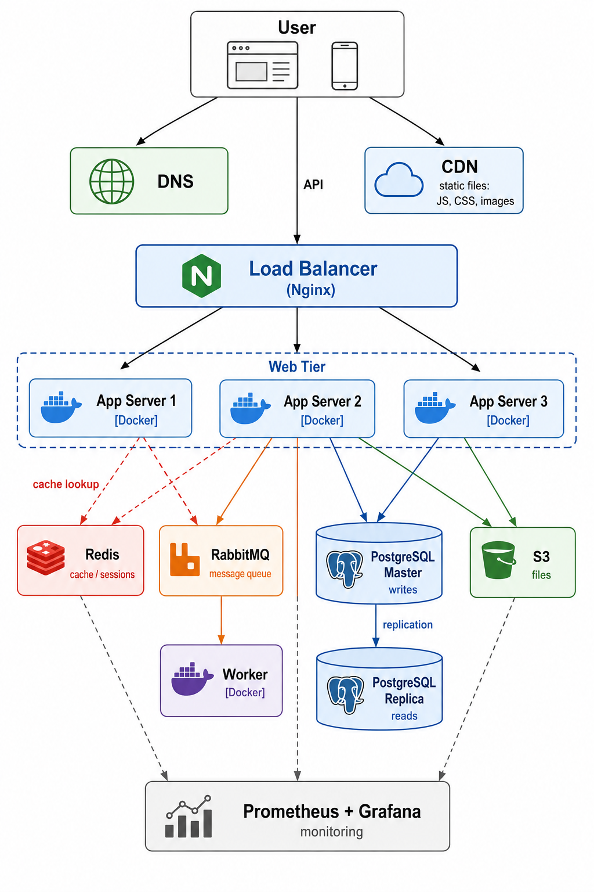
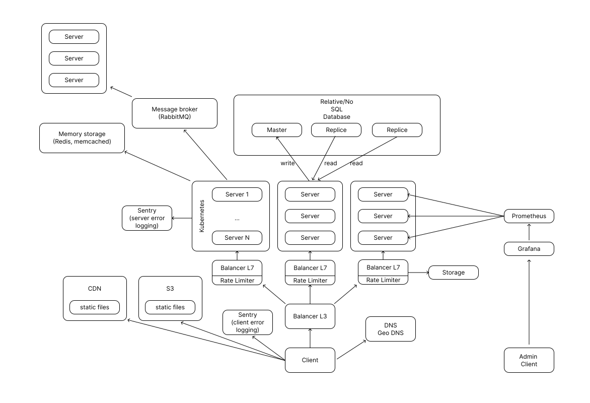

масштабируемость · балансировщики · кэш · очереди
Илья Степанов
Как выглядит схема веб-приложения?
фронтенд · бэкенд · база данных · ...
Один сервер справляется. Потом пользователей стало в 10 раз больше
Масштабируемость — способность системы справляться с ростом нагрузки без переписывания архитектуры
Два подхода: стать больше или стать больше по числу
Больше CPU, RAM, SSD
Не требует изменений в коде
Предел — самое мощное железо
Single point of failure
Больше обычных серверов
Нужен балансировщик нагрузки
Нет теоретического предела
Нет единой точки отказа
Горизонтальное масштабирование — стандарт в production
Сессия хранится в памяти одного сервера. Следующий запрос попадёт на другой — сессия потеряна
Сервер не хранит состояние — любой сервер может обработать любой запрос
Всё что «живёт» между запросами — выносится за пределы сервера: в базу данных, в отдельный кэш, в облачное хранилище
Stateless = добавить новый сервер можно в любой момент без миграции данных
о конкретных инструментах — поговорим дальше
Файлы нельзя хранить на диске сервера — при горизонтальном масштабировании каждый сервер видит только свой диск
S3 (Simple Storage Service) — объектное хранилище. Загружаешь файл по HTTP, получаешь URL. Читать может любой сервер
Один сервер — единая точка отказа. Упал — всё лежит
Ставим несколько серверов. Но как клиент узнает, к какому идти?
Нужен кто-то, кто встанет перед ними и будет распределять запросы
Open Systems Interconnection — эталонная модель взаимодействия открытых систем
Описывает, как устройства в сетях обмениваются данными и что происходит с этими данными на каждом этапе передачи
7 уровней — от физического кабеля до приложения
| 7 | Прикладной | HTTP, DNS — L7 балансировщик |
| 6 | Представления | TLS/SSL |
| 5 | Сеансовый | WebSocket |
| 4 | Транспортный | TCP, UDP — L4 балансировщик |
| 3 | Сетевой | IP, маршрутизация |
| 2 | Канальный | Ethernet, MAC |
| 1 | Физический | Кабели, сигналы |
Видит IP и порт
Не видит HTTP заголовки
Очень быстрый
HAProxy, AWS NLB
Видит URL, заголовки, cookies
Умный роутинг по пути
SSL termination
Nginx, HAProxy, AWS ALB
Обычно нужен L7 — умеет роутить /api на один сервис,
/static на другой
upstream backend {
server app1:3000 weight=3;
server app2:3000;
server app3:3000 backup;
}
server {
listen 443 ssl;
location / {
proxy_pass http://backend;
proxy_set_header Host $host;
proxy_set_header X-Real-IP $remote_addr;
}
}
Балансировщик проверяет, живы ли серверы. Упавший — исключается автоматически
GET /healthapp.get('/health', (req, res) => {
res.json({ status: 'ok' });
});
Серверов приложений — много. База данных — одна
Все они пишут и читают в одну БД. При росте нагрузки — она становится бутылочным горлышком
Один сервер не успевает отвечать на все SELECT
→ Репликация
Данные не помещаются на один сервер
→ Шардинг
Горизонтальное разбиение данных по нескольким серверам
JOIN между шардами практически невозможен. Большинство проектов не доходят до шардинга. Думайте о нём, когда одна таблица перестаёт помещаться на диск.
Правильный кэш снимает 80–90% нагрузки с базы данных
In-memory key-value хранилище. Данные в RAM — поэтому быстро
INCR), rate limitingasync function getUser(id) {
const cached = await redis.get(`user:${id}`);
if (cached) return JSON.parse(cached); // cache hit
// cache miss — идём в БД
const user = await db.query(
'SELECT * FROM users WHERE id = $1', [id]
);
await redis.set(`user:${id}`, JSON.stringify(user), 'EX', 300);
return user;
}
При изменении — удалить ключ: redis.del(`user:${id}`)
Пользователь нажал «Зарегистрироваться» — нужно отправить email, сгенерировать аватар, пушнуть аналитику
Синхронно: пользователь ждёт всё это — 500+ мс
С очередью: сервер кладёт задачу за 1 мс → отвечает → worker делает в фоне
Остановить сервер → обновить → запустить. Пока обновляемся — сайт лежит
Для продакшена это неприемлемо
Нужна стратегия, при которой пользователи не замечают обновления
Требует удвоенных ресурсов, зато переключение мгновенное
Позволяет проверить новую версию на реальных пользователях с минимальным риском
Полная production-схема с учётом всего, что обсудили
CDN · балансировщик · серверы · Redis · RabbitMQ · PostgreSQL · S3 · мониторинг

